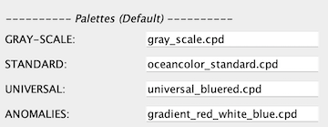
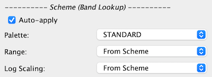
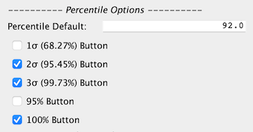

| Color Manager Preferences | |
This page enables the user to modify the default settings for the Color Manager tool. Note: any changes made to the preferences will not be automatically updated until the application is either restarted or a new view window is opened.
To open the color manager preferences window select /Tools/Options/Color Manager from the main menu (Note: this may be located instead in File/Preferences on the Mac).
|  |
These will be palettes to use with the associated field name.
 |
This is the default behavior when opening a new band or clicking on the reset button and a color scheme is not being applied.
|  |
This is the behavior regarding applying color schemes when opening a new band or clicking on the reset button. If the "Apply Color Schemes Automatically" checkbox is checked and the bandname matches a regular expression scheme lookup (defined in the configuration file ~/.snap/auxdata/color_schemes/color_palette_schemes_lookup.xml) then a color scheme is applied (palette, range, log scaling). A user editable configuration file is additionally available (~/.snap/auxdata/color_schemes/color_palette_schemes_lookup_user.xml or ~/.seadas9/auxdata/color_schemes/color_palette_schemes_lookup_user.xml)
|  |
Histogram-based range settings which get applied to palette.
 |
These are options to how and what is displayed in the color scheme selector in the "Basic editor". The pre-defined color schemes which appear in this selector are configured in the file: ~/.snap/auxdata/color_schemes/color_palette_schemes.xml.
 |
 |
 |
Restores all parameters within the Color Manager Preferences to the original default values.
Many of the default values to the Color Manager Preferences are initialized internally to preset SNAP defaults. However, the above parameters may be initialized either for convenience of package defaults branding or for ease of presetting certain preference parameters without using the GUI to set the parameters. This is done within the snap.properties file which is in your home directory. The following are the property keys listed in the same order as the GUI preferences display with the SNAP default values.
# snap.color.manipulation.palette.default.gray.scale=gray_scale.cpd # snap.color.manipulation.palette.default.standard=oceancolor_standard.cpd # snap.color.manipulation.palette.default.universal=universal_bluered.cpd # snap.color.manipulation.palette.default.anomalies=gradient_red_white_blue.cpd # snap.color.manipulation.scheme.default.enable=false # snap.color.manipulation.scheme.default.palette=GRAY-SCALE # snap.color.manipulation.scheme.default.range=From Data # snap.color.manipulation.scheme.default.log=FALSE # snap.color.manipulation.scheme.band.lookup.auto.apply=false # snap.color.manipulation.scheme.band.lookup.palette=From Scheme STANDARD # snap.color.manipulation.scheme.band.lookup.range=From Scheme # snap.color.manipulation.scheme.band.lookup.log=From Scheme # snap.color.manipulation.percentile.value=92.0 # snap.color.manipulation.percentile.1.sigma.enable.button=false # snap.color.manipulation.percentile.2.sigma.enable.button=true # snap.color.manipulation.percentile.3.sigma.enable.button=true # snap.color.manipulation.percentile.95.percent.enable.button=false # snap.color.manipulation.percentile.100.percent.enable.button=true # snap.color.manipulation.scheme.selector.verbose=false # snap.color.manipulation.scheme.selector.sort=true # snap.color.manipulation.scheme.selector.split=true # snap.color.manipulation.scheme.selector.show.disabled=false # snap.color.manipulation.sliders.zoom.in=true # snap.color.manipulation.sliders.extra.info=true # snap.color.manipulation.sliders.zoom.vertical.enable.buttons=true # snap.color.manipulation.sliders.extra.info.enable.button=true # snap.color.manipulation.rgb.button.min=0.0 # snap.color.manipulation.rgb.button.max=1.0
For SeaDAS these parameters are set as follows:
snap.context=seadas seadas.color.manipulation.palette.default.standard=oceancolor_standard.cpd seadas.color.manipulation.palette.default.universal=universal_bluered.cpd seadas.color.manipulation.palette.default.gray.scale=gray_scale.cpd seadas.color.manipulation.palette.default.anomalies=gradient_red_white_blue.cpd seadas.color.manipulation.scheme.default.enable=true seadas.color.manipulation.scheme.default.palette=GRAY-SCALE seadas.color.manipulation.scheme.default.range=From Data seadas.color.manipulation.scheme.default.log=FALSE seadas.color.manipulation.scheme.band.lookup.auto.apply=true seadas.color.manipulation.scheme.band.lookup.palette=STANDARD seadas.color.manipulation.scheme.band.lookup.range=From Scheme seadas.color.manipulation.scheme.band.lookup.log=From Scheme seadas.color.manipulation.percentile.value=92.0 seadas.color.manipulation.percentile.100.percent.enable.button=true seadas.color.manipulation.percentile.95.percent.enable.button=false seadas.color.manipulation.percentile.1.sigma.enable.button=false seadas.color.manipulation.percentile.2.sigma.enable.button=true seadas.color.manipulation.percentile.3.sigma.enable.button=true seadas.color.manipulation.scheme.selector.verbose=true seadas.color.manipulation.scheme.selector.sort=true seadas.color.manipulation.scheme.selector.split=true seadas.color.manipulation.scheme.selector.show.disabled=false seadas.color.manipulation.sliders.zoom.in=true seadas.color.manipulation.sliders.extra.info=true seadas.color.manipulation.sliders.zoom.vertical.enable.buttons=true seadas.color.manipulation.sliders.extra.info.enable.button=true seadas.color.manipulation.rgb.button.min=0.0 seadas.color.manipulation.rgb.button.max=1.0
If the above parameters do not exist in snap.properties or are commented out, then the SNAP package internal default values are used. Note that these are only default preference values, so if you set some of these parameters within the Preferences GUI, these values from the snap.properties file will be overridden by your GUI preferences. If you have modified the GUI preferences and wish to restore the values to the snap.properties file values then click "Reset To Defaults" in the Color Manager Preferences GUI.